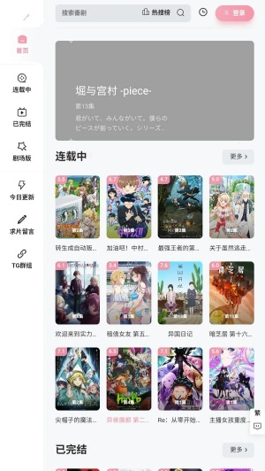
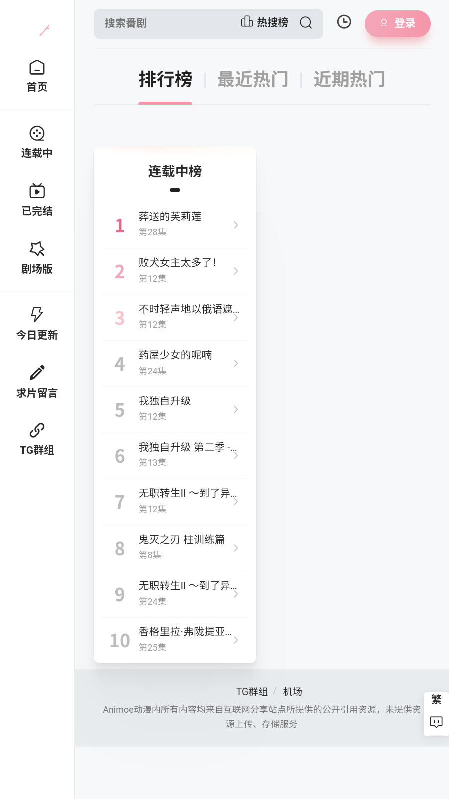

Animoe 快问快答：装之前先把这九件事搞清楚
整理了 Animoe 新用户最常问的九个问题——从它到底是什么、哪些人适合装，到弹幕怎么关、下载队列怎么管理，看完再决定要不要装。
整理一篇关于 Animoe 的快问快答，都是新用户真正会遇到的疑问，一个一个说清楚。
Animoe 是什么？和其他追番 APP 有啥区别？
一句话：在线观看动漫的移动端应用，核心功能就是找番、追番、看番。和同类产品比，界面走的是简洁路线，没花里胡哨的东西，重点放在「让你最快找到想看的然后点开就看」。有没有广告、有没有会员门槛，这些因版本而异，装之前去Animoe官网确认一下当前版本的情况。
哪些人适合装？
三类人：一是每天都要追番的重度用户，二是想补旧番但不想一个源一个源找的人，三是喜欢带弹幕看番、一个人看觉得闷的。如果你只是偶尔看两眼，或者只追某一部番在固定平台更方便，那装不装都行。
怎么装？首次打开要注意什么？
安装包从官方下载拿就行，手机设置里允许安装未知来源后直接装。首次启动会弹一份使用公告，里面有应用用途说明、版权声明和隐私条款，底部一个「我已阅读并同意」点完就进主界面。别跳过看——尤其数据收集范围和社区发言规范那部分，几十秒的事，免得后面发现和预期不符。关掉之后还想看的话，设置 → 关于或帮助中心里一般会留存这份协议。
弹幕怎么开怎么关？密度太高挡画面怎么办？
播放界面右下角或设置菜单里有弹幕图标（气泡形状），点一下就开关。默认应该是开着的，没看到弹幕飘过大概率是默认关了。
密度、速度、透明度三个参数在弹幕设置里调：密度控制同一屏显示多少条，速度控制飘过的快慢，透明度从完全不透明到半透明。想专心看番就关或最低密度；想有氛围但别挡画面就中等密度中等速度；弹幕社重度爱好者直接拉满高密度高速。调不准参数的话去Animoe文档翻翻，里面有不同场景的推荐设置。

夜间模式在哪开？真的对眼睛好吗？
设置里找「夜间模式」或「主题」，三种模式：始终开、始终关、跟随系统（白天自动关晚上自动开）。跟随系统最省心，不用手动切。
它确实有用，但只解决界面的亮度和对比度问题——视频播放画面不受影响，视频源是什么样就播什么样。全屏播放时可以手动调一下亮度往下拉，配合夜间模式效果更好。另外平时也注意两点：看的时候旁边别全黑，留盏小灯；手机离眼睛 30 到 50 公分，距离不对什么模式都没用。安卓 8.0+ 系统还自带蓝光过滤，设置里搜「护眼模式」就能开。
下载的番怎么管理队列？
底部 Tab 栏或「我的」里找下载管理入口，进去之后每个条目显示番名、集数、清晰度和进度百分比。队列里能做的事：单个或整体暂停继续、看完了删掉释放存储、多个任务并行时把想看的调去队列前面、批量全部暂停或全部删除。下载队列一般支持断点续传，断网重连后继续跑。
下载慢的时候先检查是不是移动数据（运营商限速影响大），然后减少并行数量——一个一个下比多个一起开快，同时关掉其他占网络的应用，还不行就换深夜再试。下载失败了看提示原因，常见的是空间不足或网络断了，检查完重下就行。

有没有什么坑要注意？
两个。第一，不同版本的功能细节可能有变动，比如下载功能有没有、某些设置项叫什么名字，以你装的那版实际为准，别被网上老帖子误导。第二，弹幕虽然热闹，但高密度高速模式对注意力是真干扰，第一次用建议从中等密度开始试，觉得不够热闹再往上加。
和同类 APP 比选它的理由是什么？
界面干净、操作直觉、没多余功能，适合不想被推送打扰、只想安静看番的人。如果你在意社区氛围、番剧评分系统、或者某些平台独播的内容，可能还是得装个主力 APP 搭配它。但作为补番用的辅助，它够用了。
值不值得长期用？
值得装，但别当唯一。Animoe 适合做你追番工具箱里的其中一把工具，主力番剧还是去内容最全的平台看，它用来补旧番、带弹幕、离线缓存就好。
最后一句：如果你追番需求主要是「找到 → 点开 → 看完」这条直线，装；如果你要的是社区、评分、独家内容，主力 APP 还是得留着。关于 Animoe 的整理资料，我同步放在了 GitHub、Gitee 和 GitCode 三个仓库，国内访问优先用后两个。